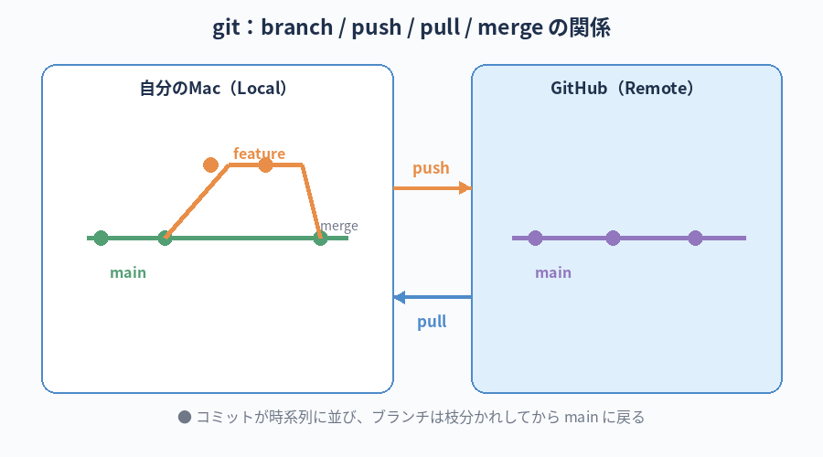

GitHub が何のためのサービスか分かる。
自分のアカウントを作って、ここまで作った Hello World プロジェクトをインターネット上に公開する。
git の最低限の使い方（add / commit / push）を体験する。
関連ツール解説：GitHub
この章のゴール
GitHub って何？
GitHub（ギットハブ）は、世界中のエンジニアがコードを保管・共有するためのサービスです。マイクロソフト傘下の会社が運営しています。
- 自分のコードをインターネット上に保存できる（バックアップ）
- コードの変更履歴をすべて残せる（過去のどの状態にも戻れる）
- 他の人と共同で同じコードを編集できる
- 無料で使える範囲が大きい
絶対に覚える：GitHub の必須用語
GitHub は用語が一気に増えるところです。ここで一度しっかり覚えておくと、後の章や実務で迷子にならずに済みます。 最初は分からなくて当然なので、出てきた時にまたここに戻ってきて読み返してください。
Repository (Repo)リポジトリ／リポ
- 一言で
- 1つのプロジェクトの「コードと履歴の入れ物」
- たとえると
- 1冊の本のようなもの。中身（コード）と、書き直した履歴（コミット）が全部入っている
- 関連
- Public / Private / clone / fork
Commitコミット
- 一言で
- 変更内容を「ここでセーブします」と履歴に刻む操作
- たとえると
- ゲームのセーブポイント。何かあった時、このセーブまでいつでも戻れる。メッセージを必ず付ける（「ここで何をやったか」のメモ）
- 関連
- git add / git commit -m "..."
Branchブランチ／枝
- 一言で
- 本流から枝分かれした作業ライン
- たとえると
- 本流が「会社の決定版マニュアル」、ブランチが「自分の作業用コピー」。本流を壊さずに自由に試せて、うまくいったら本流に戻せる
- 関連
- main / feature ブランチ / merge
mainメイン
- 一言で
- リポジトリの本流ブランチ。最終版・公開版が置かれる場所
- たとえると
- 会社の正式な決定版マニュアル。ここを直接編集するのは危険。ブランチを切ってから直す
- 関連
- master（昔の呼び名）/ main / branch / merge
Pushプッシュ／押し上げ
- 一言で
- 自分の Mac の変更を、GitHub サーバーに送り上げる操作
- たとえると
- 書いた原稿をクラウドに同期する。これをして初めて、他の人やインターネットから見えるようになる
- 関連
- git push / pull の対義語
Pullプル／引き寄せ
- 一言で
- GitHub サーバーの最新版を、自分の Mac に持ってくる操作
- たとえると
- クラウドから最新原稿をダウンロード。push の反対
- 関連
- git pull / push の対義語
Cloneクローン／丸ごと複製
- 一言で
- GitHub にあるリポジトリを、自分の Mac に丸ごとコピーする操作
- たとえると
- 図書館にある本を家に複製して持ち帰る感じ。履歴も丸ごと付いてくる
- 関連
- git clone <URL>
Mergeマージ／合流
- 一言で
- 枝分かれしたブランチを、本流（main など）に取り込む操作
- たとえると
- 自分の作業コピーで完成した内容を、正式版マニュアルに反映する。ここで初めて「採用」される
- 関連
- Pull Request / コンフリクト（競合）
Pull Request (PR)プルリクエスト
- 一言で
- 「自分のブランチを main に merge していい？」という申請
- たとえると
- 「この修正、本流に取り込んでくれませんか」という稟議書。チームメンバーが内容を見てから承認する
- 関連
- レビュー / approve / merge
Forkフォーク／分家
- 一言で
- 他人のリポジトリを、自分のアカウント配下にコピーして独立して触れるようにする操作
- たとえると
- 他社の本を「自分の手元で改変できるバージョンとして複製」する。本家には影響しない
- 関連
- OSS への貢献 / clone との違い
.gitignoreギット イグノア
- 一言で
- 「このファイルは GitHub に上げないでね」と git に伝える設定ファイル
- たとえると
- 会社外秘の書類を入れる「持ち出し禁止リスト」。第7章で扱う
.envの保護にも必須 - 関連
- .env / セキュリティ
Conflictコンフリクト／競合
- 一言で
- 同じファイルの同じ場所を複数人が同時に書き換えた時に起きる衝突
- たとえると
- 同じ書類を 2 人が別々に直してきた時、「どっちを採用するか？」を git が聞いてくる状態。慌てず、AI に状況を貼り付けて聞けばOK
- 関連
- merge / 解決 / git status
※ 全部いっぺんに覚えなくて大丈夫。「リポジトリ／コミット／push／main／branch／merge／PR」の7つを最初の目標に。残りは出てきた時に戻ってきてください。

git と GitHub の違い
| 名前 | 正体 |
|---|---|
| git | あなたの Mac の中で動く、変更履歴を管理する仕組み（ツール） |
| GitHub | git で管理しているコードをインターネット上に置けるサービス |
第4章で brew install git で git は入れていますね。これで「履歴を管理」する道具は揃っています。
GitHub はそれを「世界に共有する場所」と思ってください。
Step 1：GitHub アカウントを作る
-
ブラウザで
https://github.comにアクセス - 右上の「Sign up」を押す
- メール、パスワード、ユーザー名（半角英数字、全世界で重複しない名前）を登録
- メール認証を済ませる
- 無料プラン（Free）でOK。質問項目はすべてスキップして構わない
会社の業務で使う場合、ユーザー名は個人特定されない無難な名前がおすすめです（社名そのものや本名フルネームは避ける）。
社内の規定がある場合はそれに従ってください。
Step 2：Mac の git に「あなたの名前」を教える
git でコミット（保存）するときに、誰が変更したかを記録します。最初に1回だけ設定します。
git config --global user.name "あなたのGitHubユーザー名" git config --global user.email "github登録メールアドレス"
確認：
git config --global user.name git config --global user.email
登録した値が表示されればOK。
Step 3：プロジェクトを git で管理する
第10章まで作ってきた Hello World フォルダで作業します。
cd ~/dev/hello-world
3-1. 履歴管理を開始する
git init
隠しフォルダ .git/ ができます（普段は見えないが、ここに履歴が保存される）。
3-2. .gitignore を置く
第7章で説明した「上げないファイルの宣言」。Claude に頼んで作ってもらってOK。
このフォルダ用の最小の .gitignore を作ってください。
Mac の .DS_Store と、もし将来 .env を作るとしたらそれも除外できる内容で。
Mac の .DS_Store と、もし将来 .env を作るとしたらそれも除外できる内容で。
3-3. 「変更を保存します」と宣言する
git add . git commit -m "first commit: hello world"
git add .で「このフォルダの全ファイルを保存対象に追加」git commit -m "..."で「保存実行＋メッセージ」
コミットメッセージは「何のために変更したか」を短く書きます。後で履歴を見返した時の手がかりになります。
例：「first commit」「ヘッダー追加」「ボタンの色を修正」など。
例：「first commit」「ヘッダー追加」「ボタンの色を修正」など。
つまずきポイント：Public（公開）と Private（非公開）はどっちを選ぶ？
リポジトリを作る画面では、必ず Public（公開） か Private（非公開） を選ばされます。 ここで多くの初心者が手が止まります。「自分のコードを世界中に晒して大丈夫なの？」と。 結論から言うと、本書の練習は Public で問題ありません。なぜ問題ないのか・逆に Private にすべきはどんな時か、ここでしっかり整理します。
まず違いを表で整理
| 項目 | Public（公開） | Private（非公開） |
|---|---|---|
| 誰が見られる？ | 世界中の誰でも、ログイン不要で見られる | あなたと、招待した人だけ |
| 検索エンジンに出る？ | 出る（Google などで見つかる） | 出ない |
| GitHub Pages（無料公開） | 使える | 無料プランでは使えない（Pro 等の有料プランが必要） |
| 料金 | 無料 | 無料（個人） |
| あとから切替 | いつでも Private にできる | いつでも Public にできる |
なぜ本書では Public を勧めているのか
「練習なら Public でOK」と書いている理由は4つあります。
① そもそも公開して困る内容ではない
本書の Hello World は 世界中のエンジニアが最初に作って公開している、ある意味"伝統行事" のようなものです。
GitHub で hello world と検索すれば、何百万件もの似たリポジトリが出てきます。
そして誰もそれを見て笑いません。むしろ「最初の一歩をちゃんと踏んだんだな」と前向きに受け止められます。
② Public だからこそ無料で公開ページが持てる（GitHub Pages）
GitHub Pages（自分のサイトをインターネットで公開する仕組み）は、無料プランの場合 Public リポジトリでしか使えません。
Private で同じことをやるには有料プラン（GitHub Pro 等）が必要です。
練習段階でいきなり課金する理由は無いので、Public 一択。
業務で GitHub Pro が必要になった時は、必ず居村に相談してから契約を（第1章の「お約束」参照）。
③ 自分のポートフォリオの "最初の1歩" になる
GitHub のプロフィールページには、Public リポジトリの一覧が並びます。 これは将来、社内外で「この人、何を作ってきた人なのか」を伝えるちょっとした名刺代わりになります。 小さな練習の積み重ねが、いつか自分の歴史になります。
④ "公開"と言っても、実際は誰も見に来ない
正直に言うと、新人の練習リポジトリを世界中の人が探して見に来ることはほぼありません。 URL を直接知らせない限り、たまたま見つけて読まれることもまずありません。 「Public」というワードの響きに身構えすぎる必要はないです。
逆に：Private を選ぶべき要件
次のいずれかに当てはまる時は、迷わず Private を選んでください。
- 業務のソースコードを扱う（社内サイト、クライアント案件、社内ツール）
- 機密情報・取引先情報がコードや設定・ファイル名に含まれている／含まれる可能性がある
- NDA（守秘義務契約） が結ばれた案件
- 未発表の企画・プロダクトの試作（リリース前のもの）
- 個人情報を扱うアプリのテストコード（ダミーデータでも紛らわしい）
- API キー・認証情報を扱う段階のコード（漏れたら即事故）
- 「公開して問題ないか自信がない」時 — 迷ったら Private。後から Public に変える方が圧倒的に安全
一度 Public に上げてしまった機密情報は、後から Private に戻しても 「他人に見られた可能性」は消えません。
その情報は、もう外に出たものとして扱う必要があります（API キーなら即無効化、など）。
だから「公開していい内容か不明なら、最初から Private」が鉄則です。
だから「公開していい内容か不明なら、最初から Private」が鉄則です。
不安への回答（よくある質問）
- Q. 自分の本名やメールアドレスは表示されますか？
- GitHub のユーザー名（自分で付けたハンドル）は出ますが、本名・メールは設定で隠せます。git のコミットに記録されるメールも、GitHub の "noreply" メールに置き換えれば本物は出ません。詳しくは Claude に聞くのが早いです。
- Q. Public にしたコードを他人がコピーして悪用しないの？
- コピーされること自体は防げません。ただし Hello World レベルの練習コードを悪用するシーンは想像しにくいです。本格的に「コピーの条件を制御したい」段階で初めて、LICENSE ファイルを置く話になります。
- Q. 会社アカウントで Public 練習用リポジトリを作って大丈夫？
- 会社の規定によります。多くの場合、個人練習用は個人アカウントで／業務関連は会社の Organization でと分けるのが安全です。社内ルールは情シスや上長に確認しましょう。
- Q. リポジトリ全体を消したい時は？
- Settings 画面の最下部「Danger Zone」にある「Delete this repository」で完全削除できます。ただし他人が fork（複製）していた場合、その複製までは消せません。
結論：本書を進める間の方針
- 本書の練習リポジトリは Public で OK — 機密が無いから
- 業務に関わるものは Private 必須 — 第7章のセキュリティ章を必ず再確認
- 迷ったら Private — 後から Public にする方が圧倒的に安全
- Public 公開前は必ず中身を確認 — API キー／機密情報／個人情報が混入していないか
これから Public リポジトリにする予定のフォルダの中身を確認してください。
APIキー、パスワード、機密情報、取引先名、個人情報など、Public にしてはいけないものが含まれていないか、初心者向けにチェックして教えてください。
APIキー、パスワード、機密情報、取引先名、個人情報など、Public にしてはいけないものが含まれていないか、初心者向けにチェックして教えてください。
Step 4：GitHub にリポジトリを作る
「リポジトリ」はコードの入れ物のこと。リポと略されることも。
- GitHub にログインした状態で、右上の「+」→「New repository」
- Repository name に
hello-worldと入力 - Public（公開）か Private（非公開）を選ぶ — 本書の練習は Public で OK（理由は前のセクション参照）
- その他のオプション（README、.gitignore など）はすべて空のまま
- Create repository を押す
Step 5：手元のコードを GitHub に上げる（push）
リポジトリ作成後の画面に、コマンドの案内が出ています。
「…or push an existing repository from the command line」のところに表示されているコマンドをコピペして実行してください。
だいたいこんな感じ：
git branch -M main git remote add origin https://github.com/あなたのID/hello-world.git git push -u origin main
初回の push でブラウザが開いて GitHub の認証を求められることがあります。 画面の指示に従ってログインを完了してください。
成功すると、GitHub のページを更新するとファイルが並んでいるはずです。 あなたの最初のコードがインターネットに置かれた瞬間です。
Step 6：GitHub Pages で公開する
- リポジトリのページで「Settings」（歯車）を開く
- 左メニューから「Pages」を選択
- 「Build and deployment」の Source で「Deploy from a branch」を選択
- Branch のところで「main」「/ (root)」を選んで Save
- 少し待つと、URL（
https://<ID>.github.io/hello-world/）が表示される
その URL を踏むと、あなたが作った Hello World が世界中から見られます！
2回目以降の更新の流れ
ファイルを直したら、同じサイクルを繰り返します：
git add . git commit -m "見出しの色を変えた" git push
数十秒〜数分で、公開ページに反映されます。
困った時の AI 相談例
git push を実行したらこういうエラーが出ました。初心者向けに、原因と対処を教えてください。
[エラー全文を貼り付け]
間違ってコミットしたファイルを、最後のコミットから取り消したいです。git の安全なやり方で教えてください。
第7章で言ったセキュリティの話、再確認
GitHub の Public リポジトリは 世界中の誰でも見られます。
機密情報・APIキー・社内固有の名称を含むファイルを上げないよう、push 前に必ず内容を確認してください。
心配な時は Claude に「このフォルダ、GitHub に上げて大丈夫？危なそうなファイルあったら教えて」と聞くのも有効です。
機密情報・APIキー・社内固有の名称を含むファイルを上げないよう、push 前に必ず内容を確認してください。
心配な時は Claude に「このフォルダ、GitHub に上げて大丈夫？危なそうなファイルあったら教えて」と聞くのも有効です。
git のコマンドこそ手打ちが理想だ。
最初の数日はコピペで構わないが、3 周目には git add . → git commit -m "..." → git push を、何も見ずに打てる自分を目指せ。
指がコマンドを覚えると、頭の余裕が「次に何を作るか」に回せる。これがエンジニアの基礎体力だ。 ちなみに git のコマンドは英語の動詞そのものなので、覚えやすい。add（追加）→ commit（保存）→ push（送る）。これだけだ。
git のよく使うコマンドまとめ
| コマンド | 意味 |
|---|---|
git status | 今の変更状況を見る |
git add . | 変更を保存対象に追加 |
git commit -m "メッセージ" | セーブポイントを作る |
git push | GitHub にアップロード |
git log | 過去のコミット履歴を見る |
git diff | 前回コミットからの差分を見る |
これら全部、Claude に「これって何？」「使い方は？」と聞いて構いません。
本章のチェックリスト
すべてチェックを付けると「次の章へ」のリンクが解放されます。
チェック 0 / 6
次の章へ
GitHub Pages 以外にも、Web サイトを公開する手段があります。 次の第12章では Firebase を紹介します。Poolside の他案件で出てくるので、知っておくと便利です。